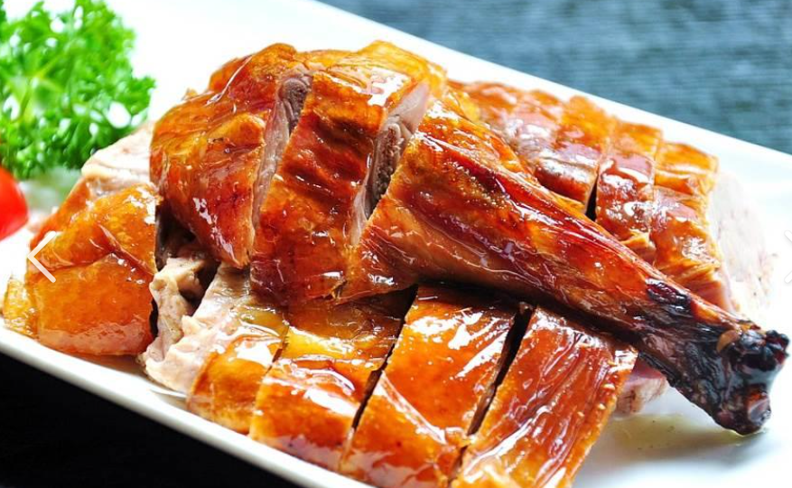

美食文化
广东美食文化源远流长，以粤菜为代表，讲究清、鲜、嫩、滑、爽、香、脆，追求原料的本味、清鲜味。下面为你介绍一些经典的广东美食。

白切鸡
白切鸡是粤菜中的经典名菜，以其皮黄肉白、肥嫩鲜美而闻名。制作过程简单，将鸡煮熟后晾凉切块，搭配姜蒜汁等调料食用，原汁原味。
肠粉
肠粉是广东人喜爱的传统早餐之一，口感软糯，馅料丰富。常见的有牛肉肠粉、虾仁肠粉等，搭配特制的酱汁，味道十分美妙。

烧鸭
烧鸭色泽红润，皮脆肉嫩，香味四溢。经过特殊的腌制和烤制工艺，烧鸭的肉质鲜嫩多汁，皮脆而不腻，是广东餐桌上的常客。